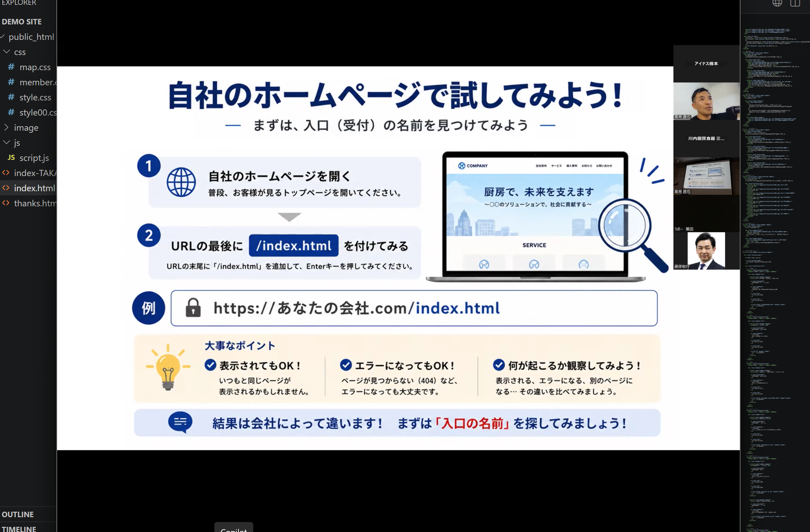
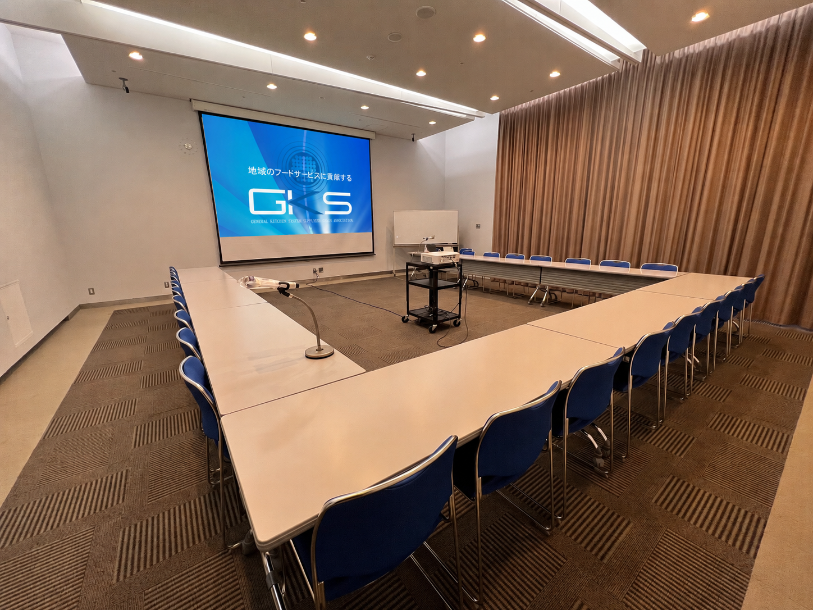
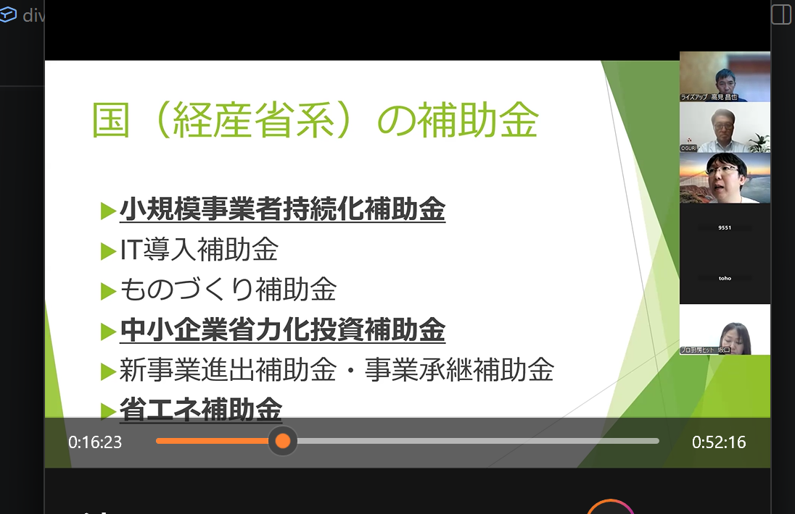
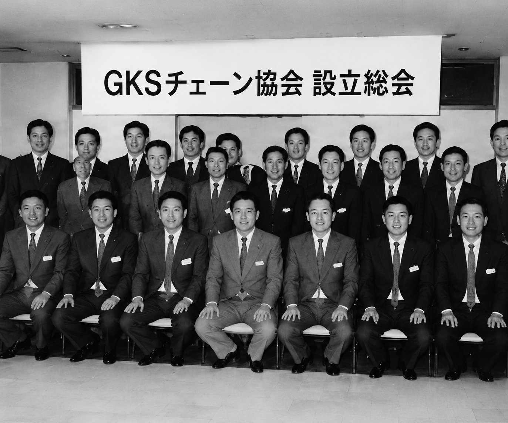
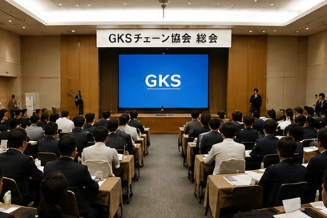

経営を学べる
成功事例や経営ノウハウを共有し、自社の成長に活かせます。


GKSチェーン協会は、全国各地の厨房設備会社が集まり、 地域や企業の枠を超えて連携するネットワークです。
会員企業同士が情報やノウハウを共有し、 共同仕入れ・研修会・視察会・委員会活動などを通じて、 業界全体の発展と会員企業の成長を目指しています。
個々では実現できない価値を仲間と共に創り、 全国規模でお客様をサポートできる組織づくりに取り組んでいます。


全国の仲間とつながり、学び、企業として成長できます。
成功事例や経営ノウハウを共有し、自社の成長に活かせます。

同じ業界で働く仲間と交流し、相談できる関係を築けます。

メーカー情報や市場動向など、業界の最新情報を学べます。

AIやDXなど、これからの時代に必要な取り組みを共有できます。
GKSチェーン協会の活動やお知らせをご紹介します。

生成AIを活用した業務改善やホームページ内製化について学びました。実演を交えながら、今日から取り組める活用方法を共有しました。

全国の会員企業が一堂に会し、協会活動の報告や今後の方針を共有しました。経営・営業に関する情報交換も行い、会員同士の交流を深める機会となりました。

ホテル厨房の視察と研修を通じて、最新設備や厨房計画の考え方を学びました。会員企業の知識向上につながる有意義な研修会となりました。
GKSチェーン協会では、年間を通じてさまざまな活動を行っています。






全国の厨房設備会社・厨房機器販売会社が参加しています。

厨房機器メーカーが協会活動を支えています。
全国の正会員企業と賛助会員企業が連携し、情報共有・研修会・共同活動を通じて業界の発展に取り組んでいます。 会員企業同士が知識や経験を共有し、メーカー各社とも協力することで、個社では実現できない価値を創出。 地域を越えたつながりを活かしながら、お客様へより良い厨房づくりとサービスを提供できるネットワークを築いています。
全国の正会員企業をご紹介いたします。
代表取締役社長 塚本 教博
〒064-0915 北海道札幌市中央区南15条西6丁目2番1号
TEL 011-531-2900
FAX 011-531-2167
ホームページを見る代表取締役 上崎 明彦
〒310-0844 茨城県水戸市住吉町204-6
TEL 029-247-4613
FAX 029-247-2705
ホームページを見る代表取締役 兵藤 道雄
〒323-0829 栃木県小山市東城南2-4-4
TEL 0285-27-5711
FAX 0285-28-1811
ホームページを見る代表取締役 和田 卓也
〒350-0856 埼玉県川越市問屋町9-2 協同組合ペンタウン内
TEL 049-222-3017
FAX 049-225-5372
ホームページを見る代表取締役 深澤 久
〒221-0832 神奈川県横浜市神奈川区桐畑8番地3
TEL 045-620-3373
FAX 045-620-3681
ホームページを見る代表取締役 大前 辰彦
〒381-0033 長野県長野市南高田2-11-104
TEL 026-244-8540
FAX 026-244-8556
ホームページを見る代表取締役 早川 徳仁
〒400-8044 山梨県甲府市中町5-1
TEL 055-242-0630
FAX 055-242-0631
ホームページを見る代表取締役社長 小栗 豊人
〒430-0912 静岡県浜松市中央区茄子町354-6
TEL 053-464-2277
FAX 053-464-2003
ホームページを見る代表取締役 住谷 哲
〒501-0111 岐阜県岐阜市鏡島2004番6
TEL 058-201-3353
FAX 058-201-3354
ホームページを見る代表取締役 若林 弘樹
〒510-0072 三重県四日市市九の城町5-8
TEL 0593-51-5131
FAX 0593-51-5112
ホームページを見る代表取締役 黒田 真弘
〒918-8054 福井県福井市加茂河原町20-17-2
TEL 0776-33-1000
FAX 0776-33-2000
ホームページを見る代表取締役 西村 均
〒520-0812 滋賀県大津市木下町18番8号 ベラビスタ膳所2階
TEL 077-524-2857
FAX 077-524-2823
ホームページを見る代表取締役 中野 圭二
〒581-0014 大阪府八尾市中田4-153
TEL 072-993-7770
FAX 072-993-7749
ホームページを見る代表取締役 佐治 知洋
〒633-0048 奈良県桜井市生田1003番地
TEL 0744-45-3977
FAX 0744-45-3973
ホームページを見る代表取締役 福井 正佳
〒700-0953 岡山県岡山市南区西市263-1
TEL 086-241-9551
FAX 086-241-2792
ホームページを見る代表取締役 上松 久志
〒791-8017 愛媛県松山市西長戸町600
TEL 089-924-5327
FAX 089-924-5342
ホームページを見る代表取締役 三角 文孝
〒895-0074 鹿児島県薩摩川内市原田町18番21号
TEL 0996-22-5664
FAX 0996-23-0151
ホームページを見るGKSチェーン協会の活動を支えるメーカーをご紹介いたします。
代表取締役社長 柴﨑 栄二
〒240-0003 神奈川県横浜市保土ヶ谷区天王町2-39-3
WEBサイトを見る代表取締役社長 福島 豪
〒555-0011 大阪府大阪市西淀川区竹島2-6-18
WEBサイトを見る代表取締役 左近 貞治
〒131-0045 東京都墨田区押上1-1-2
WEBサイトを見る代表取締役社長 加藤 勇樹
〒495-8517 愛知県稲沢市祖父江町甲新田イ-9
WEBサイトを見る代表取締役社長 高雄 雅丸
〒141-0022 東京都品川区東五反田1丁目24番2号 JRE東五反田一丁目ビル2階
WEBサイトを見る代表取締役 河島 絵美
〒670-0061 兵庫県姫路市西今宿1丁目11-55
WEBサイトを見る代表取締役社長 神木 宗和
〒639-2272 奈良県御所市蛇穴230
WEBサイトを見る代表取締役社長 岡田 重雄
〒480-0304 愛知県春日井市神屋町熊野上1139-49
WEBサイトを見る代表取締役 服部 俊男
〒444-8691 愛知県岡崎市羽根町字若宮30番地
WEBサイトを見る代表取締役社長 肥後 慎一郎
〒547-0002 大阪府大阪市平野区加美東6-15-41
WEBサイトを見る代表取締役社長 中野 郁
〒767-0011 香川県三豊市高瀬町下勝間148-3
WEBサイトを見る代表取締役 永井 秀樹
〒550-0002 大阪府大阪市西区江戸堀1丁目27番6号
WEBサイトを見る代表取締役社長 森田 誠一
〒920https-0333 石川県金沢市無量寺3丁目18番地
WEBサイトを見る代表取締役社長 松野 敦
〒106-0041 東京都港区麻布台1-11-9
WEBサイトを見る代表取締役 渡辺 信介
〒164-0012 東京都中野区本町2丁目46番1号 中野坂上サンブライトツインビル11F
WEBサイトを見る代表取締役社長 大岩 政敏
〒455-0037 名古屋市港区名港二丁目9番27号 ポートプラザビル3階
WEBサイトを見るGKSチェーン協会は、全国の会員企業とともに活動しています。

GKSチェーン協会は、全国の厨房設備会社がつながり、 時代の変化とともに歩み続けています。

全国の厨房設備会社が集い、 情報共有と相互成長を目的として GKSチェーン協会が設立されました。

会員企業が全国へ広がり、 情報交換や研修会、共同活動を通じて 強いネットワークが築かれています。
生成AIやDX活用、 デジタル技術の導入を進めながら、 次世代の厨房業界を創造していきます。
GKSチェーン協会は、全国の厨房設備会社が学び、 情報を共有し、共に成長していくためのネットワークです。
厨房業界を取り巻く環境は日々変化しています。 私たちは会員企業同士がつながり、 新しい知識や情報を共有することで、 業界全体の発展に貢献したいと考えています。
今後も会員企業の皆様と共に学び、 共に成長し、 次世代へつながる協会づくりを進めてまいります。
入会相談や協会活動についてのお問い合わせはこちらからお願いします。